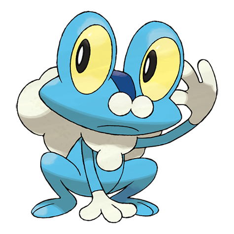
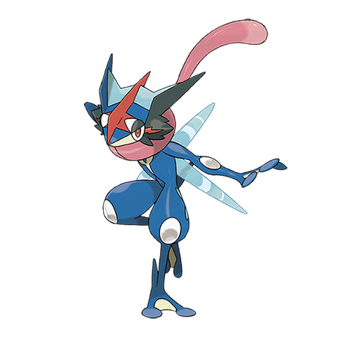

Froakie

Froakie é um Pokémon do tipo Água, introduzido na sexta geração dos jogos Pokémon (Pokémon X e Y). Ele é conhecido por sua aparência de pequeno sapo azul e por ser o Pokémon inicial da região de Kalos. Ágil e inteligente, Froakie usa sua velocidade para enganar os oponentes e desviar facilmente de ataques. Uma de suas habilidades mais interessantes é o uso da espuma protetora que cobre seu pescoço e suas costas — ela serve como uma espécie de amortecedor que o protege de golpes. Froakie também é capaz de criar bolhas de água para atacar seus inimigos, utilizando golpes como Water Pulse e Bubble. Quando evolui, Froakie se transforma em Frogadier e depois em Greninja, um dos Pokémon mais populares da franquia, famoso por sua forma elegante e por sua versão especial, o Greninja Ash, que aparece no anime. Uma curiosidade é que Froakie representa a combinação perfeita entre leveza e força, sendo o símbolo da disciplina e da estratégia entre os treinadores de Kalos.
Frogadier

Frogadier é a forma evoluída de Froakie e é um Pokémon do tipo Água, conhecido por sua agilidade e precisão em batalha. Ele é ágil como um verdadeiro ninja, movendo-se silenciosamente e atacando seus inimigos com golpes rápidos e certeiros. Sua aparência lembra um sapo esguio, e a espuma que antes era apenas um colar em Froakie agora cobre parte de seu corpo, ajudando-o a se camuflar e proteger-se. Frogadier é capaz de lançar bolhas de água com tamanha força e precisão que pode atingir um alvo a mais de trinta metros de distância. No anime e nos jogos, ele demonstra grande inteligência tática, observando o ambiente antes de atacar e sempre procurando o ponto fraco do adversário. Quando atinge todo o seu potencial, Frogadier evolui para Greninja, tornando-se ainda mais veloz e poderoso. Essa linha evolutiva é muito admirada pelos treinadores por representar o equilíbrio entre técnica, velocidade e estratégia, características essenciais para um verdadeiro mestre Pokémon.
Greninja

Greninja é a forma final evoluída de Froakie e Frogadier, um Pokémon do tipo Água e Sombrio conhecido por sua incrível velocidade, agilidade e estilo de combate inspirado em um ninja. Ele é um dos Pokémon mais populares e carismáticos da franquia, tanto nos jogos quanto no anime. Greninja utiliza sua língua como uma espécie de cachecol, o que o torna facilmente reconhecível. Ele é capaz de se mover tão rápido que parece desaparecer, atacando de surpresa com golpes precisos e silenciosos. Entre seus ataques mais famosos estão Water Shuriken, em que lança shurikens feitas de água, e Night Slash, um golpe sombrio e cortante. Uma curiosidade marcante é sua forma especial chamada Greninja Ash, resultado de uma forte ligação entre Greninja e seu treinador, Ash Ketchum. Nessa forma, eles compartilham pensamentos e emoções, tornando seus ataques ainda mais poderosos. Greninja simboliza a união entre técnica, inteligência e trabalho em equipe — qualidades que o tornaram um dos Pokémon mais admirados de todos os tempos.